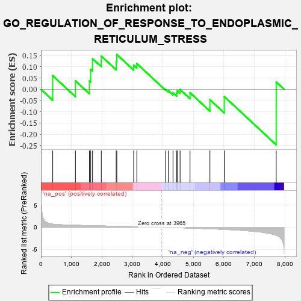
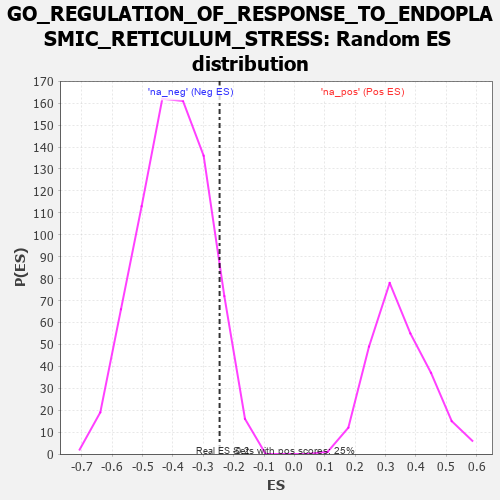

| | | Dataset | 7d |
| Phenotype | NoPhenotypeAvailable |
| Upregulated in class | na_neg |
| GeneSet | GO_REGULATION_OF_RESPONSE_TO_ENDOPLASMIC_RETICULUM_STRESS |
| Enrichment Score (ES) | -0.24656746 |
| Normalized Enrichment Score (NES) | -0.6178099 |
| Nominal p-value | 0.91566265 |
| FDR q-value | 1.0 |
| FWER p-Value | 1.0 |
Table: GSEA Results Summary

Fig 1: Enrichment plot: GO_REGULATION_OF_RESPONSE_TO_ENDOPLASMIC_RETICULUM_STRESS
Profile of the Running ES Score & Positions of GeneSet Members on the Rank Ordered List
| PROBE | GENE SYMBOL | GENE_TITLE | RANK IN GENE LIST | RANK METRIC SCORE | RUNNING ES | CORE ENRICHMENT | | 1 | BAX | | | 387 | 0.711 | 0.0604 | Yes |
| 2 | NCK2 | | | 1131 | 0.458 | 0.0372 | Yes |
| 3 | ERP29 | | | 1589 | 0.376 | 0.0374 | Yes |
| 4 | DERL2 | | | 1632 | 0.368 | 0.0886 | Yes |
| 5 | HYOU1 | | | 1692 | 0.358 | 0.1362 | Yes |
| 6 | BRSK2 | | | 1979 | 0.308 | 0.1474 | Yes |
| 7 | UBXN1 | | | 2467 | 0.232 | 0.1218 | Yes |
| 8 | UBAC2 | | | 2488 | 0.229 | 0.1543 | Yes |
| 9 | UFL1 | | | 3041 | 0.144 | 0.1069 | No |
| 10 | EDEM2 | | | 3145 | 0.131 | 0.1140 | No |
| 11 | FICD | | | 4087 | -0.022 | -0.0010 | No |
| 12 | PDX1 | | | 4179 | -0.038 | -0.0065 | No |
| 13 | OPA1 | | | 4330 | -0.065 | -0.0154 | No |
| 14 | SYVN1 | | | 4454 | -0.085 | -0.0177 | No |
| 15 | LRRK2 | | | 4467 | -0.087 | -0.0058 | No |
| 16 | BAG6 | | | 4563 | -0.108 | -0.0012 | No |
| 17 | CLU | | | 4889 | -0.174 | -0.0153 | No |
| 18 | EDEM1 | | | 5541 | -0.331 | -0.0464 | No |
| 19 | XBP1 | | | 6011 | -0.475 | -0.0324 | No |
| 20 | BOK | | | 7715 | -1.817 | 0.0322 | No |
Table: GSEA details [plain text format]

Fig 2: GO_REGULATION_OF_RESPONSE_TO_ENDOPLASMIC_RETICULUM_STRESS: Random ES distribution
Gene set null distribution of ES for GO_REGULATION_OF_RESPONSE_TO_ENDOPLASMIC_RETICULUM_STRESS